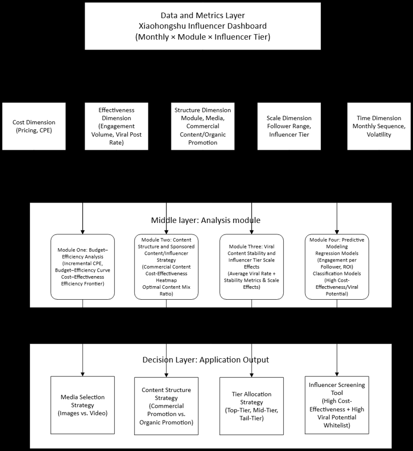
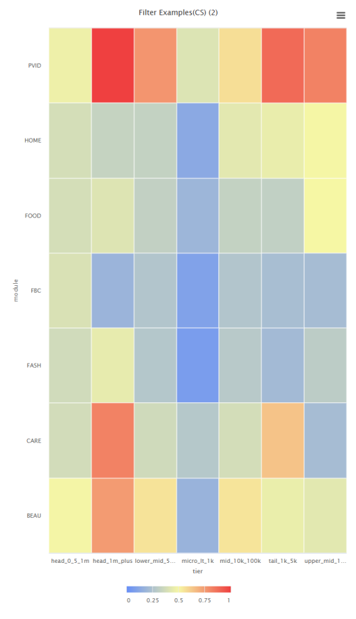
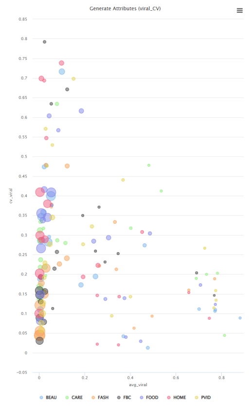
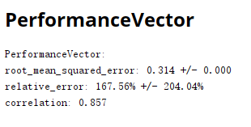

01
PROJECT VALUE
把投放决策拆成可量化的分析流程
项目使用平台互动、爆文率、CPE、达人层级、内容模块、媒介形式和商业内容占比等指标，在缺少 GMV 与完整转化链路数据的条件下，建立可解释的代理评估体系。
GRADUATION PROJECT
研究围绕品牌投放预算分配、内容结构优化与达人预筛选，基于小红书平台数据构建营销效果分析与决策支持框架。
PROJECT VALUE
项目使用平台互动、爆文率、CPE、达人层级、内容模块、媒介形式和商业内容占比等指标，在缺少 GMV 与完整转化链路数据的条件下，建立可解释的代理评估体系。




这个项目体现了我在业务问题拆解、指标体系设计、数据清洗建模、可视化分析、模型评估和管理建议输出上的完整实践能力，适合迁移到金融科技岗位中的数据治理、客户运营、风控辅助分析和数字化决策支持场景。